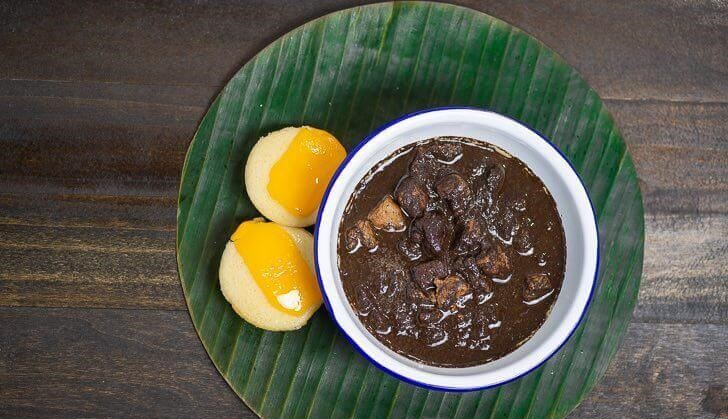

Dinuguan Recipe
What is Dinuguan?
Dinuguan is the Filipino version of blood stew. Pork slices are sautéed in onion and garlic and cooked with pork blood. Sometimes, pork innards such as the small and large intestines along with other internal parts of the pig are added. tart by sautéing garlic and onion. This is a common practice when cooking Filipino dishes. Make sure that the onion softens before adding the pork. Saute the meat until it turns light brown. This recipe suggest the use of any boneless cut of pork. Cook it until it turns light brown. Feel free to add innards.
Ingredients
1 lb pork cut into cubes
1 cup vinegar
2 pieces long green pepper
1 1/2 tablespoon brown sugar
1 piece onion chopped finely
1 tablespoon garlic minced
3 tablespoon cooking oil
1 cup water
10 oz pork blood
1 piece pork cube boullion
salt and pepper to taste
Instructions / How to Cook
1. Heat oil in a pan. Sauté garlic and onion.
2. Once the onion softens, add pork. Continue to sauté for 5 minutes or until light brown.
3. Pour water. Let boil.
4. Add pork cube. Cook in low heat until the meat tenderizes.
5. Add pork blood. Stir. Cook for 8 to 10 minutes while stirring.
6. Pour vinegar and add sugar and long green pepper. Cook for 12 to 15 minutes.
7. Season with salt and pepper as needed.